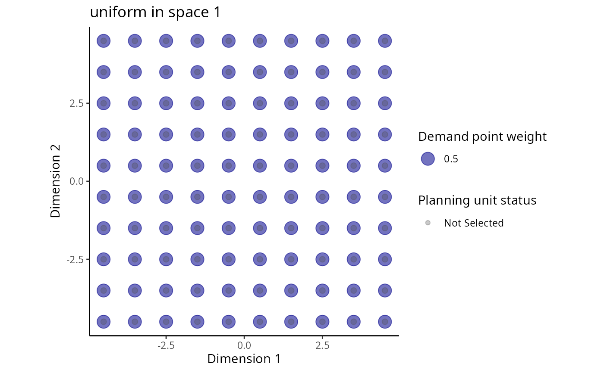

This function plots the distribution of planning units and the distribution of demand points for a particular species in an attribute space. Note that this function only works for attribute spaces with one, two, or three dimensions.
space.plot(x, species, space, ...) # S3 method for RapData space.plot(x, species, space = 1, pu.color.palette = c("#4D4D4D4D", "#00FF0080", "#FFFF0080", "#FF00004D"), main = NULL, ...) # S3 method for RapUnsolved space.plot(x, species, space = 1, pu.color.palette = c("#4D4D4D4D", "#00FF0080", "#FFFF0080", "#FF00004D"), main = NULL, ...) # S3 method for RapSolved space.plot(x, species, space = 1, y = 0, pu.color.palette = c("#4D4D4D4D", "#00FF0080", "#FFFF0080", "#FF00004D"), main = NULL, ...)
| x |
|
|---|---|
| species |
|
| space |
|
| ... | not used. |
| pu.color.palette |
|
| main |
|
| y |
|
# load RapSolved objects data(sim_ru, sim_rs) # plot first species in first attribute space space.plot(sim_ru, 1, 1)# plot distribution of solutions for first species in first attribute space space.plot(sim_rs, 1, 1)